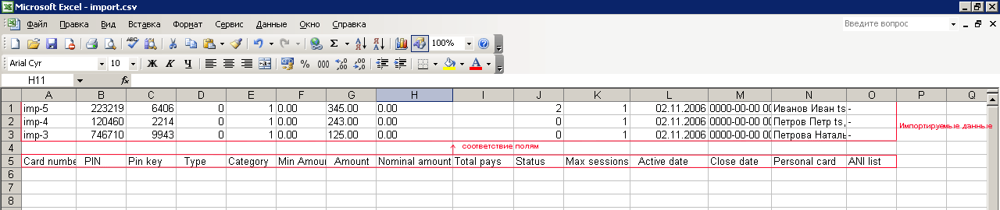

В оглавление
Например, что бы перенести определенную карточку из одного лота в другой, необходимо выполнить следующее:
1. В форме «Lots & Cards» раздела «Cards» выбираем лот – card-test, из которого необходимо перенести карточку; 2. В первом поле, напротив номеров карт, ставим галочку напротив той карточки – «al-7», которую необходимо перенести; 3. В секции «Transfer cards» в поле «Select Lot» выбираем лот, в который необходимо перенести карточку – IPS_LOT; 4. Нажимаем кнопку «Transfer cards to a selected lot» для подтверждения переноса карточки.
См. рис.:
5. Для проверки переноса карточки открываем лот – IPS_LOT, см. рис.:
Перенести группу карточек в состав другого лота можно двумя способами:
• Выделив группу карточек вручную, проставив галочки в первом поле напротив номеров карт, необходимых для переноса; • Получив группу карточек по критериям поиска (описание параметров поиска см. «Форма “Lots & Cards”») для последующего переноса в состав другого лота.
Перенос группы карточек вручную:
1. В форме «Lots & Cards» раздела «Cards» выбираем лот – card-test, из которого необходимо перенести группу карточек; 2. В первом поле, напротив номеров карт, ставим галочки напротив тех карточек («al-201» – «al-210»), которые необходимо перенести; 3. В секции «Transfer cards» в поле «Select Lot» выбираем лот, в который необходимо перенести группу карточек – IPS_TEST; 4. Нажимаем кнопку «Transfer cards to a selected lot» для подтверждения переноса группы карточек.
Перенос группы карточек, полученной по критериям поиска:
1. В форме «Lots & Cards» раздела «Cards» выбираем лот – card-test, в котором необходимо найти группу карточек по диапазону «al-17» – «al-25»; 2. В секции «Filter» выбираем значение «Card number range»; 3. По выбранному значению «Card number range» ставим параметр «Range»; 4. Вводим названия карт (начальное и конечное) для диапазона карт, которые необходимо найти; 5. Нажимаем кнопку «Find» для осуществления поиска по указанному диапазону; 6. В секции «Transfer cards» в поле «Select Lot» выбираем лот – «IPS_LOT», в который будем переносить выбранную группу карт; 7. В секции «Transfer cards» в поле «Select cards» выбираем значение «Filtered cards»; 8. Нажимаем кнопку «Transfer cards to a selected lot» для подтверждения переноса группы карточек.
Импортировать карты в базу системы можно следующим образом:
1. В форме «Lots & Cards» раздела «Cards» выбираем лот – «card-import», в который необходимо импортировать карточки. 2. Нажимаем кнопку «Import cards» в секции по созданию и редактированию карточных лотов. 3. В открывшейся форме по импорту карточек «Card importation» указываем путь к файлу с данными по карточкам – import.csv
Примечание: Файл «import.csv» выглядит следующим образом, см. рис.:

При импорте файла, поля карт могут принимать следующие значения:
4. Нажимаем кнопку «Ok» для подтверждения загрузки файла с данными по карточкам.
Требуется добавить в систему 3 карты:
CARD ID 12189 PIN 40304236 BALANC 1.21 CARD ID 13170 PIN 71094413 BALANC 17.2 CARD ID 14161 PIN 70320579 BALANC 20
С учетом следующих условий:
Решение: 1. Заводим лот «Test»:
2. Загружаемый csv-файл будет выглядеть следующим образом:
3. Результат импорта будет выглядеть так: